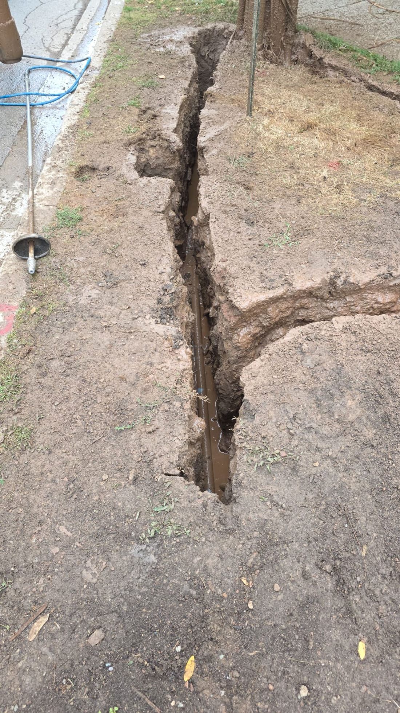

Utilities
Gas, hydro, water and telecom crews needing strike-free exposure and locates.
Every non-destructive digging service your site needs — modern equipment, experienced operators, and one uncompromising approach to safety.
The full scope of non-destructive excavation AMG delivers for contractors, utilities and municipalities. Deep-dives on the core services follow below.
Pressurized water and high-flow vacuum for any dig near buried infrastructure — the safest, most precise way to move earth on a live site.
Safely expose buried gas, hydro, fibre and water lines to confirm exact location, depth and condition before any machine digs.
Small, precise test holes that verify utility position ahead of boring, piling or design — fact on file, not a paint mark.
Narrow, clean trenches for conduit, cable and fibre — no over-dig, precise edges, and far less restoration for your crews.
High-capacity suction digging for contained, controlled excavations where mechanical equipment carries too much strike risk.
Heated-water excavation that cuts through Ontario's deepest frost, keeping winter repairs and builds on schedule.
Extended hose reaches backyards, easements, tight lots and indoor digs — hundreds of feet from where the truck parks.
Private utility locates paired with visual confirmation — covering the services Ontario One Call doesn't register.
Corridor-scale daylighting for utility crossings and congested rights-of-way — verified depths your designers and drill crews can build on.
Expose, repair, replace, raise and thaw water boxes and curb stops without damaging the service — built for municipal water crews.
Live dispatch around the clock for strikes, spills, breaks and washouts — often on site within the hour across our core area.
High-flow vacuum clean-outs of catch basins, sumps, wet wells, tanks and accumulated spoil — wet or dry material.
Pinpoint the depth, alignment and condition of buried gas, hydro, fibre and water lines with clean, precise potholes — so design teams, drillers and excavators work from fact, not from a paint mark.

Slot trench · boulevard service lineWhen you need a clean channel for conduit, cable or fibre, hydrovac slot trenching cuts exactly the width you specify — no over-dig, no torn-up boulevards, and far less surface for your crews to restore afterward.
Clear catch basins, oil-grit separators (Stormceptor and similar units), sumps, wet wells, tanks and accumulated spoil quickly and cleanly. Our high-flow vacuum handles slurry, mud and standing water without sending a worker into a confined space.
When ground freezes a metre deep and conventional digging stalls, our heated-water systems slice through frost line to keep emergency repairs and winter builds moving — safely, all season.
Not every excavation sits where a truck can park. With extended remote hose, we dig hundreds of feet from the unit — into backyards, between buildings, down easements and even indoors — without driving heavy equipment across a finished or sensitive site.
We pair private utility locating with hydrovac daylighting so you don't just have a mark on the grass — you have the line, exposed and confirmed. Especially critical for unregistered private services.
Watermain breaks, spills and washouts don't keep business hours. Our dispatch line is answered around the clock, and we mobilize fast — often within the hour for sites across the Greater Toronto Area and beyond.
Municipal water crews rely on hydrovac to work around curb stops and water service boxes without cracking the box or nicking the line. We expose, locate, repair, replace and raise water boxes to grade — and in winter, thaw frozen water services with heated water.
We sub to the contractors and crews who keep Southern Ontario running — and we make their jobs safer and their schedules tighter.
Gas, hydro, water and telecom crews needing strike-free exposure and locates.
Civil and commercial GCs de-risking excavation around live infrastructure.
Public works teams handling repairs, maintenance and capital projects.
Designers and surveyors who need verified subsurface data.
Network builders running conduit through congested corridors.
Remediation and monitoring teams needing clean, controlled excavation.
Hydrovac uses pressurized water to break up soil and a powerful vacuum to remove the resulting slurry into an onboard tank. Because nothing mechanical touches the ground, it's the safest way to dig around buried utilities — no blades, no augers, no strikes.
We confirm valid Ontario One Call tickets before mobilizing and can arrange private locates for services that fall outside the public registry. We then daylight to confirm everything visually before any machine work begins.
With remote hose, we can excavate hundreds of feet from where the unit is parked — reaching backyards, easements, tight infill lots and indoor locations without driving across finished or sensitive surfaces.
Yes. Our heated-water systems cut through deep frost that stops conventional excavation cold. We run frost digs throughout the winter for emergency repairs and active winter builds across Southern Ontario.
Our dispatch line is answered 24/7/365. For sites within our core service area — the GTA, Hamilton, Niagara and the Waterloo region — we frequently mobilize within the hour. Call dispatch and we'll give you a straight answer on timing.
Send over the location, scope and timeline and we'll come back fast with a clear, fixed quote.